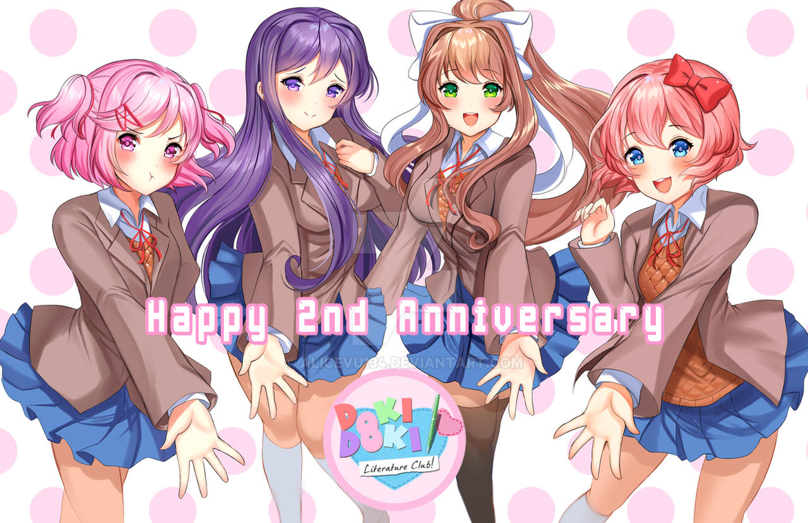

2nd Anniversary
O protagonista e a Sayori chegam ao clube como de costume. No entanto, hoje é um dia especial porque é o 2º aniversário do clube! Eles vão até a sala do clube para encontrar tudo decorado. Então, a maré muda quando alguns visitantes inesperados chegam ao clube...
⬇ Download